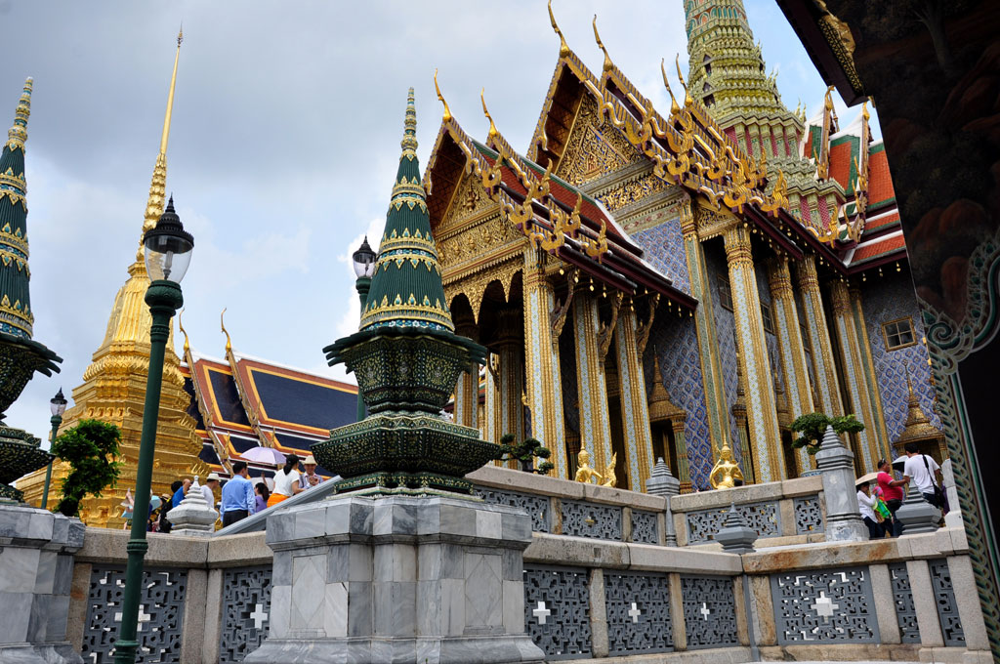
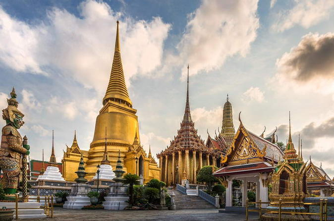

El Palacio Real de Bangkok es un gran conjunto arquitectónico formado por un grupo de edificios que sirvieron como sede real desde el siglo XVIII hasta mediados del siglo XX.La construcción del Palacio Real de Bangkok comenzó en el año 1792 durante el reinado de Rama I. Su nombre en tailandés es Phra Borom Maha Ratcha Wang.
El lugar más importante del palacio es el templo Wat Phra Kaew, en el cual se encuentra el Buda de Esmeralda que, tallado en jade en el siglo XV y con sólo 45 centímetros de altura, es el más valioso y venerado de Tailandia.Es necesario advertir que la entrada al Palacio Real no está permitida con pantalón corto o camisetas sin mangas. Si no lleváis ropa adecuada en la puerta os la prestarán de forma gratuita.

Por otro lado, debéis saber que para acceder a cualquier sala donde esté presente la imagen de Buda es necesario descalzarse. Si sois escrupulosos no olvidéis llevar calcetines.Si en los alrededores del templo alguna persona os indica que el Palacio Real está cerrado por cualquier razón, no debéis hacerles caso ya que su objetivo es ofrecernos otras visitas alternativas en tuktuk, paseos en barco u otras actividades. Comprobad siempre lo que os digan por vosotros mismos.
El Gran Palacio de Bangkok, con su templo Wat Phra Kaew, o Templo del Buda Esmeralda, es una de las visitas imprescindibles en la capital de Tailandia. Si vais a visitar Bangkok, el Gran Palacio Real es el primer lugar que veréis recomendado en la mayoría de guías, foros y blogs de viajes. Es, desde luego, un lugar precioso que no hay que perderse, pero su belleza no ha pasado desapercibida en ningún rincón del planeta, así que conviene armarse de paciencia y prepararse para pasar calor y algunos momentos de agobio. A continuación os hablamos del Gran Palacio de Bangkok, pero os sugerimos leer también nuestro post sobre el tranquilo templo Wat Suthat, donde podéis relajaros después de esta visita.
El Gran Palacio Real de Bangkok es un enorme complejo de edificios que sirvió como residencia oficial de los Reyes de Tailandia (antes Siam) entre 1782 y 1925, y que aún hoy se sigue usando para numerosos actos de la realeza. Su construcción fue ordenada por Rama I tras decidir que la capital del reino pasaría de Thonburi a Bangkok. El conjunto del Gran Palacio se edificó en el corazón de Rattanakosin, una isla creada artificialmente junto al río Chao Phraya mediante la excavación de canales. El palacio fue creciendo en tamaño y número de edificios durante los siguientes reinados, pero ya con Rama II alcanzaría su actual extensión de 218.400 m². Palacio Dusit.
Al tratarse del centro de poder y centro religioso del reino, el Gran Palacio de Bangkok albergaba a un buen número de residentes (miles, de hecho), así que llegaron a tener sus propias leyes y se organizaron como una pequeña ciudad. El fin del Gran Palacio como residencia central llegó de forma más o menos gradual, coincidiendo con la época en que Tailandia hizo la transición de Monarquía Absoluta a Monarquía Constitucional. Actualmente la residencia oficial se encuentra en el interior del complejo del Una de las primeras cosas que conviene saber sobre la visita al Gran Palacio es que en los alrededores hay que estar alerta de timadores. El engaño más común consiste en hacerte creer que el recinto está cerrado y que pueden llevarte a ver otros sitios que sí están abiertos. Incluso desde la megafonía del Gran Palacio alertaban de falsos guías ofreciéndose para tours privados. Una vez superadas estas pequeñas molestias y las posibles aglomeraciones, accederemos al primer sector de un enorme complejo por el cual nos moveremos con la ayuda de un mapa que ellos mismos nos facilitarán y, opcionalmente, con una audioguía en español. Este primer recinto es el Wat Phra Kaew o Templo del Buda de Esmeralda.
El Wat Phra Kaew es el templo budista más importante de Tailandia. Fue de una de las primeras construcciones que se levantaron en el Gran Palacio cuando Rama I decidió afincarse en Bangkok. Lo que podemos visitar hoy en día es un conjunto de edificios sagrados (la Estupa Dorada, el Panteón Real, una réplica de Angkor Wat, etc.) y estatuas de enorme belleza y colorido, representando algunas de ellas a guerreros que se levantan hasta los 5m de altura.
De entre todas las construcciones que veremos, sobresale por sus dimensiones y su relevancia el Ubosoth (Sala de Ordenación o Sala de Actos), que alberga la venerada estatuilla del Buda de Esmeralda. Para acceder a esta sala es necesario descalzarse y respetar las normas generales que se deben cumplir en los templos budistas (añadiendo que aquí no se pueden realizar fotografías). Hablaré sobre esta pequeña estatua en un post especial, pero os adelanto que no debéis esperar nada espectacular. Su fama e importancia residen más bien en su historia.
La visita continúa en dirección al Patio Central (o Zona de Recepción). Los sábados y domingos están cerradas las pocas salas que normalmente abren al público, así que si visitáis el Gran Palacio de Bangkok un fin de semana, como nosotros, sólo os restará pasear admirando los diferentes estilos arquitectónicos que se usaron en la construcción de edificios como el enorme Phra Thinang Chakri Maha Prasat, el Salón del Trono.
Su peculiar estética, mezcla de renacentismo y estilo tradicional tailandés, se debe por un lado al capricho del Rey Rama V, que quiso construirlo al estilo europeo y encargó la obra a dos arquitectos italianos, y por otro lado a la presión de sus asesores más cercanos, que le convencieron de mantener al menos los tejados típicos de su arquitectura. El resto de pabellones que veréis suelen estar cerrados (o en obras), así que una vez consideréis finalizada la visita será un buen momento para sacar el mapa y decidir el próximo destino, que bien podría ser el cercano y popular Wat Pho (Templo del Buda Reclinado).